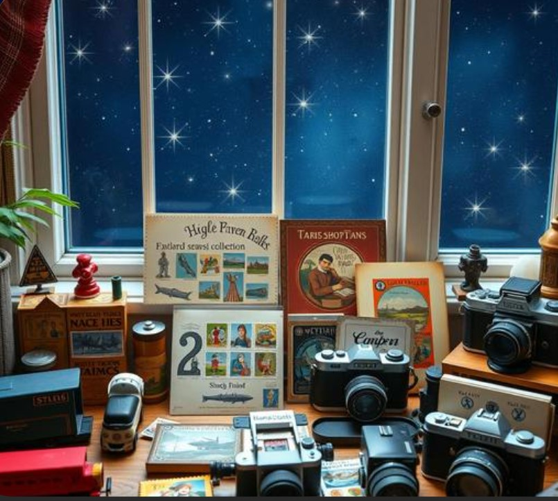

Sports get trophies. Spelling bees get plaques. Even minor work achievements get a certificate printed on slightly nicer paper than usual. Meanwhile, the person who's spent eleven years building an objectively impressive collection of vintage typewriters gets, at most, a slightly concerned look from relatives at Thanksgiving.

This is a real gap in how achievement gets recognized. Niche hobbies — the deeply specific, slightly obsessive kind — often require just as much sustained effort, skill, and knowledge as the things that do get socially celebrated. They just don't fit the recognized categories.
The Specific Tragedy of the Unrecognized Hobbyist
Talk to anyone who's spent years mastering something genuinely niche — competitive birdwatching, restoring antique furniture, building an elaborate model train layout, becoming the unofficial neighborhood expert on a specific era of jazz — and you'll find real expertise, often more depth than plenty of socially celebrated achievements. What's missing isn't the skill. It's the cultural script for celebrating it.
Sociologists who study "serious leisure" (a real academic term for hobbies pursued with the dedication usually reserved for careers) have found that hobbyists in niche pursuits often build genuine expert identity and community status within their hobby circles — it's just invisible to anyone outside that specific community, which means the recognition rarely reaches family or friends who'd otherwise be proud.
Why This Recognition Gap Actually Matters
Psychologists studying motivation and self-concept note that external recognition, even small amounts, reinforces identity and continued engagement with an activity. The absence of recognition doesn't necessarily stop people from continuing their hobbies, but it does mean a huge amount of genuine, sustained effort goes completely unmarked by anyone outside the niche community itself.
Giving the Weird, Wonderful Hobby Its Due
This is exactly the kind of gap a star on GalaxySpace can fill, slightly absurdly and completely sincerely — naming a star after the hobby itself, or the specific milestone within it (the 500th stamp, the decade-long train layout, the personal record at competitive whatever), with a message explaining why it actually matters.
You can create one here — the trophy case for achievements that don't have a trophy case yet.